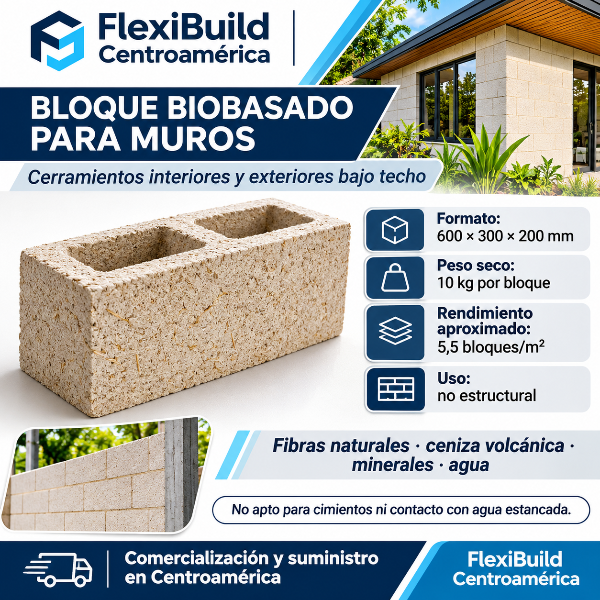

1. Biobased masonry block
Reference for non-load-bearing enclosures. Visual reference size: 600 × 300 × 200 mm. Not for foundations or standing-water exposure.
Specialist distribution · Nicaragua and all Central American markets
FlexiBuild Central America markets and coordinates the supply of agricultural-origin blocks, plant-fiber panels and mineral finishes. We commercialize these products primarily in Nicaragua and also serve projects and customers in Honduras, El Salvador, Guatemala, Panama, Belize and Costa Rica.
We serve construction companies, real-estate developers, building-development firms, architects, engineers, hardware retailers, distributors, property owners and expats.
Request catalog and quotation View products and applications
A commercial line for construction professionals
FlexiBuild provides a commercial channel, coordinates product information and assesses supply requirements for construction projects and distribution partners.
Product catalog · Nicaragua
Specifications shown in the graphics are preliminary references and must be checked against current manufacturer documentation before design, pricing or installation.

Reference for non-load-bearing enclosures. Visual reference size: 600 × 300 × 200 mm. Not for foundations or standing-water exposure.

Panel to assess for walls, ceilings and protected applications. Visual reference size: 1,000 × 600 × 50 mm. Verify performance and installation in current technical data.

Proposed 25.4 mm variant for kitchen cabinets, closets, shelving and interior linings; supplier confirmation pending.

Base coat for wall leveling. Visual reference thickness: 8–12 mm per layer; confirm preparation and coverage in current data.

Decorative final coat. Visual reference thickness: 2–4 mm. Confirm color chart and availability with supplier.
Professional buyers
Project supply, quantities and delivery coordination.
Materials for residential, commercial and hospitality developments.
Product information and preliminary compatibility review.
Trade purchasing, volumes, logistics and channel terms.
Applications, specifications and project coordination.
English- and Spanish-language support in Nicaragua.
Architectural applications
These images are conceptual application and integration references. They are not evidence of completed FlexiBuild projects or proof that every product is suitable for every use; compatibility must be assessed for each project.

Architectural reference for enclosure solutions in residential projects.

Residential design applications subject to technical material selection.

Visual reference for developers and construction companies.

Connections, fixing and compatibility require project design and technical documentation.

Architecture and component coordination according to project scope.
Supply and project delivery
Request product supply alone or ask FlexiBuild to assess design, technical coordination and construction services. Construction is quoted after reviewing site, drawings, quantities, product compatibility, applicable requirements and responsibilities. Scope is agreed in writing.
Priority market
Our commercial activity is concentrated primarily in Nicaragua and also covers Honduras, El Salvador, Guatemala, Panama, Belize and Costa Rica. Coverage, import requirements, logistics and delivery are confirmed by product and destination.
Frequently asked questions
No. Our role is marketing, distribution and supply coordination.
Yes. We accept project-based and trade-channel inquiries. Minimum quantities, volume pricing and availability are confirmed in each quotation.
We can assess and quote design, coordination and construction when technical data, design and site conditions support the intended use.
Do not assume so. Uses and limitations must be confirmed by manufacturer documentation and professional design.
Send your location, product, application, estimated quantity and whether you need supply only or construction services too.